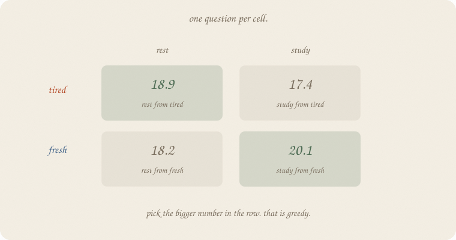
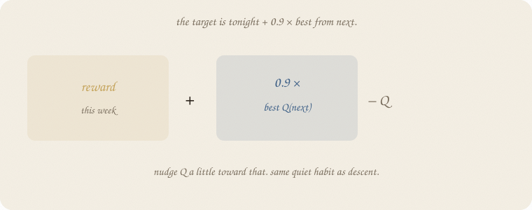
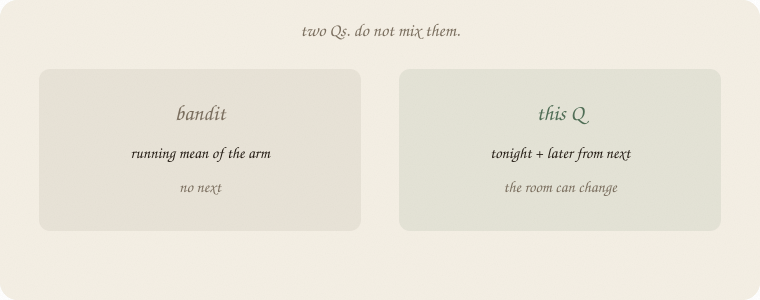
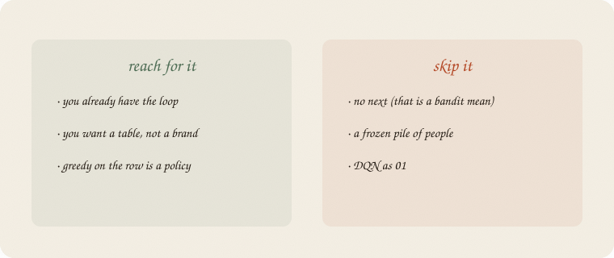

datazines · a sketchbook

Read 01 the loop first. Same exam weeks: tired / fresh, rest / study. Same 400-week table. This notebook is that table, named. Not a second loop. Not a bandit mean (02 bandits).
Flip it like a notebook. One page = one idea. Done.
The loop had a grid. Each cell answers one question:
I am this (tired or fresh). I do that (rest or study). Then I always pick the bigger cell in the next row. How many points do I expect, from now on?
That number is Q. Ugly letter. Friendly job: how good is this act from here.
After 400 weeks (from 01):
| rest | study | |
|---|---|---|
| tired | 18.9 | 17.4 |
| fresh | 18.2 | 20.1 |
Greedy = bigger number in the row. Tired → rest. Fresh → study. The policy is the table with a highlighter.
A bandit’s Q is a running mean of that arm. No next room. Do not mix them (02 bandits).
You do not fill Q by thinking. You nudge.
Tonight: tired, rest, reward 0.86, next = fresh.
Target = tonight + 0.9 × best Q(fresh).

Best Q(fresh) is study, 20.1. Target ≈ 0.86 + 0.9 × 20.1 ≈ 19.0.
Old Q(tired, rest) was 18.9. Nudge a little toward 19.0:
Q ← Q + 0.3 × (target − Q)
Same quiet volume as descent. Different job: not sit at a dip — track a moving target. The 0.9 is “later counts a bit less.” Without it, infinite rest-study forever would blow up the table.
20% of weeks you pick the smaller cell on purpose, so the dull act still gets a number. Otherwise study-from-tired stays a lie you never checked.

| bandit | this Q | |
|---|---|---|
| room | one, forever | tired / fresh |
| number | mean of pulls | tonight + later from next |
| try | ε or UCB | ε on the row |
If rest tonight changed nothing but the points, you would average rest. Here rest changes next week. That is why the cell is not a mean of 1s. It is 1 plus a discounted life after.
A deep net that outputs Q is a later engine. The idea is the table. Not 01.
If you keep only one thing:
Q = from here, this act, points from now on.
Same world as 01 the loop. Only print Q.
import numpy as np
rng = np.random.default_rng(7)
# 0 tired, 1 fresh | 0 rest, 1 study
def step(s, a, rng):
if s == 0 and a == 0:
return 1.0 + rng.normal(0, 0.15), 1 if rng.random() < 0.8 else 0
if s == 0 and a == 1:
return 0.0 + rng.normal(0, 0.15), 1 if rng.random() < 0.1 else 0
if s == 1 and a == 0:
return 0.0 + rng.normal(0, 0.15), 1 if rng.random() < 0.9 else 0
return 3.0 + rng.normal(0, 0.15), 1 if rng.random() < 0.2 else 0
Q = np.zeros((2, 2))
s = 0
for _ in range(400):
a = int(rng.integers(0, 2)) if rng.random() < 0.2 else int(np.argmax(Q[s]))
r, ns = step(s, a, rng)
Q[s, a] += 0.3 * (r + 0.9 * Q[ns].max() - Q[s, a])
s = ns
print("Q tired [rest, study]", np.round(Q[0], 2).tolist())
print("Q fresh [rest, study]", np.round(Q[1], 2).tolist())
print("greedy", ["rest" if i == 0 else "study" for i in np.argmax(Q, axis=1)])
print("target example: tired rest, r=0.86, next=fresh →",
round(0.86 + 0.9 * Q[1].max(), 1))
Q tired [rest, study] [18.88, 17.39]
Q fresh [rest, study] [18.15, 20.06]
greedy ['rest', 'study']
target example: tired rest, r=0.86, next=fresh → 18.9
Same printout as 01. The extra line: one night’s target lands on 18.9 — the cell it is nudging. 0.3 is the stride. 0.9 is later. 0.2 is try. No sklearn. The table is the lesson.
| word | meaning |
|---|---|
| Q(s, a) | points from now on, this act, then greedy |
| target | r + 0.9 × max Q(next) |
| nudge | Q ← Q + rate × (target − Q) |
| greedy | bigger cell in the row |
| try | pick the smaller cell sometimes |
Also called (in a room):
| here | there |
|---|---|
| Q | action value |
| target | TD target |
| rate 0.3 | α |
| 0.9 | γ |
| try 0.2 | ε |

Reach for it when
Skip it when
Pays you: four readable cells. A policy without inventing one. The same leftover-as-target as 01, named.
Costs you: a small world (two states). Random tries. Not a grade. Not a sampler.
The table, named. Next: leftover as a score you chose, then a walk.
Flip it like a notebook. One page = one idea.